1

الأطفال� الذين تقل أعمارهم عن� 10 سنوات� , يجب وضعهم في� المقاعد الخلفية� و تثبيتهم بحزام الأمان، وفي حالة عدم وجود حزام الأمان يجب مراقبتهم بعدم فتح الأبواب و النوافذ.
الأطفال� الذين تقل أعمارهم عن� 10 سنوات� , يجب وضعهم في� المقاعد الخلفية� و تثبيتهم بحزام الأمان، وفي حالة عدم وجود حزام الأمان يجب مراقبتهم بعدم فتح الأبواب و النوافذ.
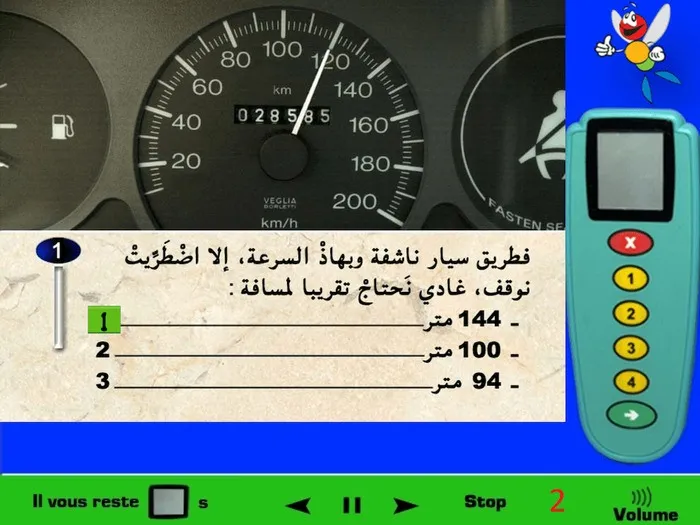
أسير بسرعة 120 كلم في الساعة في طريق ناشفة (أي عادية)، لحساب مسافة الوقوف في هذه الحالة فنقوم بحذف العدد الفردي وضرب ما تبقى من عدد في نفسه، في هذه الحالة سوف نقوم بحذف العدد الفردي والذي هو 0 ويتبقى لنا العدد 12. إذن نضرب العدد 12 في 12 والنتيجة هي 144. إذن نحتاج إلى مسافة 144 متر للوقوف إذا كنت أسير بسرعة 120 كلم في الساعة.
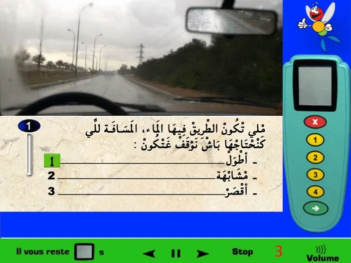
عندما يكون الجو مُمطر فالطّريق قد يكون زلِقاً وبالتالي المسافة التي سوف أحتاجها للوقوف سوف تكون أطول.
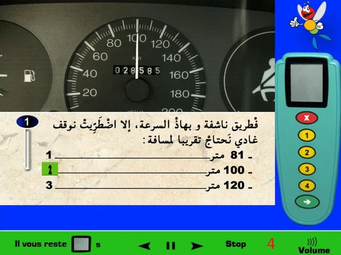
أسير بسرعة 100 كلم في الساعة في طريق ناشفة (أي عادية)، لحساب مسافة الوقوف في هذه الحالة فنقوم بحذف العدد الفردي وضرب ما تبقى من عدد في نفسه، في هذه الحالة سوف نقوم بحذف العدد الفردي والذي هو 0 ويتبقى لنا العدد 10. إذن نضرب العدد 10 في 10 والنتيجة هي 100. إذن نحتاج إلى مسافة 100 متر للوقوف إذا كنت أسير بسرعة 120 كلم في الساعة.
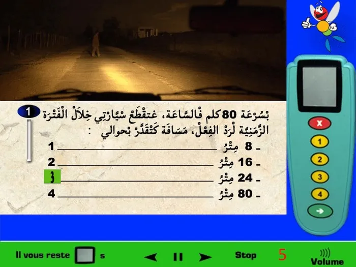
بالنسبة لحساب المسافة الخاصة بالفترة الزّمنية لرد الفعل (المقدرة بثانية) نقوم بحذف العدد الفردي من السرعة التي نسير بها ونضرب ما تبقى من عدد في العدد 3، إذن في هذه الحالة بما أننا نسير بسرعة 80 كلم في الساعة فسوف نقوم بضرب العدد 8 في 3 والنتيجة هي 24، إذن سوف تقطع السيّارة خلال الفترة الزّمني لرد الفعل مسافة تقدّر بحوالي 24 متر.
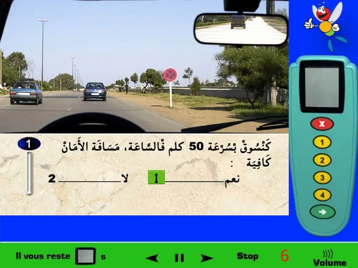
مسافة الأمان في هذه الحالة نقوم بحذف العدد الفردي الذي هو 0 ونقوم بضرب ما تبقى في العدد 6، في هذه الحالة بما أننا نسير بسرعة 50 كلم في الساعة فسوف نضرب 5 في 6 النتيجة هي 30 متر. إذن كيف أعرف هل هي كافية أم لا؟ نقوم بإستعمال الخطوط التي توجد على اليمين والفراغ الذي بين الخطوط. الخط فيه 20 متر والفراغ الذي يوجد بين الخطوط فيه 6 متر. في الصورة يظهر أن هنالك خط وفراغ وخط إذن تقريبا يوجد بيني وبين العربة التي أمامي 20 متر و 6 امتار و 20 متر إذن تقريبا 46 متر، وأنا بما أنني أسير بسرعة 50 كلم في الساعة وأحتاج إلى 30 متر إذن بما أنه بيني وبين العربة 46 متر إذن هذه المسافة كافية.
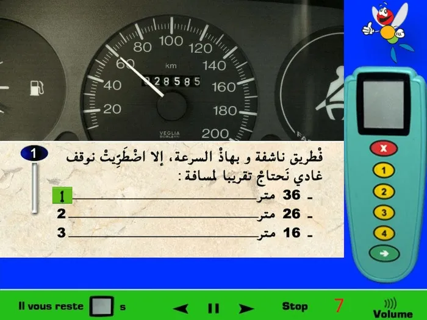
أسير بسرعة 60 كلم في الساعة في طريق ناشفة (أي عادية)، لحساب مسافة الوقوف في هذه الحالة فنقوم بحذف العدد الفردي وضرب ما تبقى من عدد في نفسه، في هذه الحالة سوف نقوم بحذف العدد الفردي والذي هو 0 ويتبقى لنا العدد 6. إذن نضرب العدد 6 في 6 والنتيجة هي 36. إذن نحتاج إلى مسافة 36 متر للوقوف إذا كنت أسير بسرعة 60 كلم في الساعة.
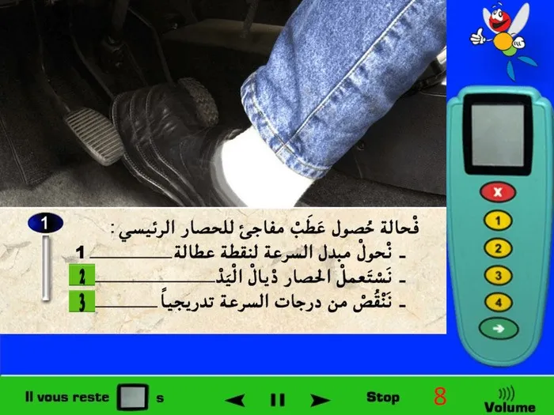
بالنسبة لفرامل العربة يوجد لدينا 3، (الحصّار هو الفرامل): لدينا فرامل اليد، وفرامل الرئيسي (نستعمل الأرجل فيه) وثالثا وأخيرا الفرامل عندما نقوم بتغيير مستوى السرعة تدريجيا إلى الصفر (ما يسمى بفرامل المحرّك). في السؤال يقول أنه يوجد عطب مفاجئ للحصار الرئيسي (أي فرامل الأرجل) لم يعد يعمل. في هذه الحالة يجب علينا استعمال حصار اليد (تدريجيا) وأيضا نقوم بإستعمال علبة السرعة وذلك بإنقاص درجات السرعة تدريجيا إلى غاية المستوى 2.
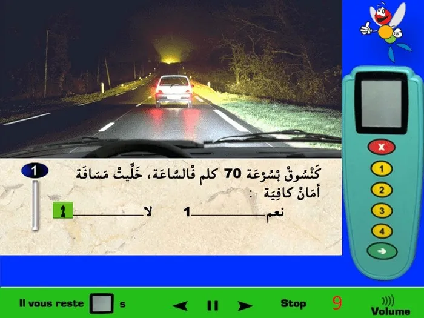
أسير بسرعة 70 كلم في الساعة، مسافة الأمان في هذه الحالة نقوم بحذف العدد الفردي والذي هو 0 ونقوم بضرب ما تبقى من عدد في 6، إذن 7 في 6 هي 42 متر. في الصورة بيني وبين السيّارة فراغ وفيه 6 أمتار وخط فيه 20 متر المجموع هو 26 (الخط والفراغ من الجهة اليمنى). وأنا أحتاج إلى 42 متر في مسافة الامان. إذن لم أترك مسافة أمان كافية بيني وبين العربة التي أمامي.
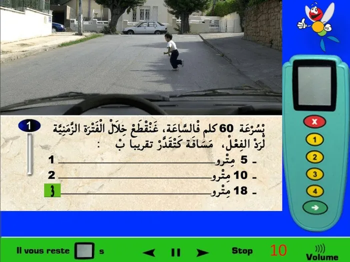
بالنسبة لحساب المسافة الخاصة بالفترة الزّمنية لرد الفعل (المقدرة بثانية) نقوم بحذف العدد الفردي من السرعة التي نسير بها ونضرب ما تبقى من عدد في العدد 3، إذن في هذه الحالة بما أننا نسير بسرعة 60 كلم في الساعة فسوف نقوم بضرب العدد 6 في 3 والنتيجة هي 18، إذن سوف تقطع السيّارة خلال الفترة الزّمني لرد الفعل مسافة تقدّر بحوالي 18 متر.
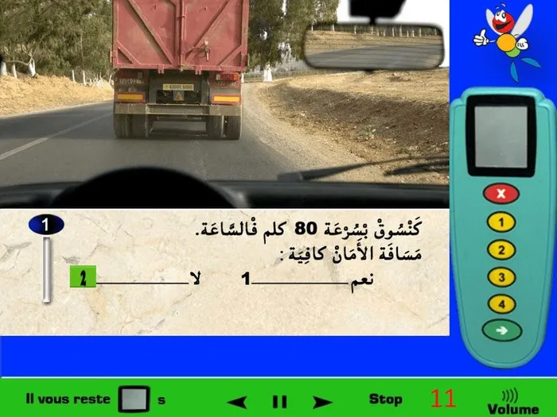
أسير بسرعة 80 كلم في الساعة، ومسافة الأمان التي أحتاجها هي 8 ضرب 6 النتيجة 48 (نحذف العدد الفردي والذي هو 0 ونضرب ما تبقى من عدد في 6)، يعني يجب أن أترك مسافة أمان تقدّر ب 48 متر، في الصورة واضح جدا أن السيارة قريبة جدا من الشاحنة، مسافة الأمان قليلة جدا من مسافة الامان التي أحتاجها وهي 48 متر.
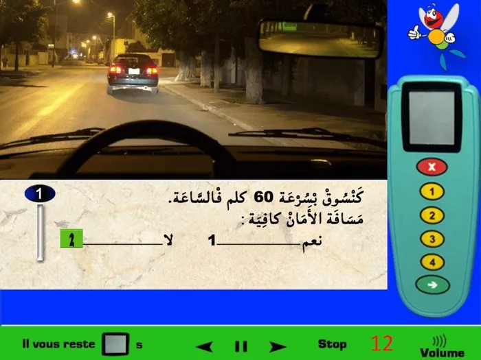
مسافة الأمان في هذه الحالة نقوم بحذف العدد الفردي الذي هو 0 ونقوم بضرب ما تبقى في العدد 6، في هذه الحالة بما أننا نسير بسرعة 60 كلم في الساعة فسوف نضرب 6 في 6 النتيجة هي 36 متر. داخل المدينة نقوم بإستعمال إمّا الأشجار أو أعمدة الإنارة العمومية لكي نعرف هل مسافة الأمان كافية أم لا. في هذه الحالة توجد أشجار وبين كل شجرة وشجرة يوجد 10 أمتار (بين أعمدة الإنارة يوجد 36 متر). بما انه لا بوجد أعمدة الإنارة سوف نستعمل الأشجار لحساب مسافة الأمان، تقريبا يوجد 2 فراغ بين الأشجار التي تفصل بيني وبني العربة إذن يوجد تقريبا 20 متر وأنا أحتاج مثلما قمنا بالحساب سابقا أننا نحتاج إلى 36 متر. إذن مسافة 20 متر بيني وبين العربة التي أمامي غير كافية.
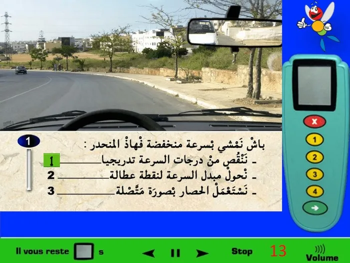
لكي نسير بسرعة مخفّضة في هذا المنحدر هذا معناه أننا نريد إنقاص الّسرعة، وفي هذه الحالة فإن أفضل طريقة لإنقاص السرعة مع التحكّم بالعربة فهي عن طريق الإنقاص من درجات السرعة تدريجيا، أي نكون في مستوى السرعة مثلا 5 ونغيّره إلى 4 وبعد ذلك إلى المستوى 3 وهكذا.. لكن بدون الوصول إلى المستوى 1 في الهبطة،، (بالنسبة لتحويل مبدل السرعة لنقطة عطالة فلن نستطيع التحكّم بالسيّارة وبالنسبة لاستعمال الحصّار بصورة متصلة فهذا الفعل سوف يوقف السيارة بصورة مفاجئة وأيضا توجد سّيارة من الخلف).
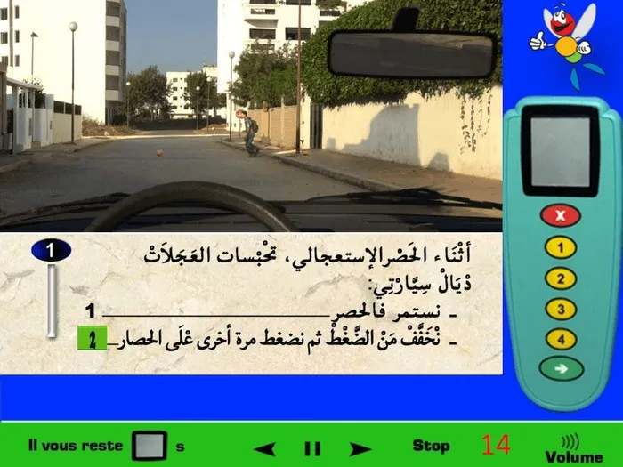
أثناء الحصر الاستعجالي (يعني فجأة سوف نستعمل الفرامل) العجلات لم تعد تعمل أي أن العجلات ثابتة. لذلك بما أنها ثابتة ولا تتحرك فإن استعمال الفرامل بصفة مستمرة ( الاستمرار في الحصر) قد يؤدي إلى إنزلاق السيّارة وعدم التحكّم بها. لذلك أفضل طريقة هي الضّغط على الفرامل بطريقة متقطّعة وخفيفة، يعني أقوم بالضّغط على الفرامل وأتركها وأضغط على الفرامل وأتركها وهكذا إلى أن تقف السيارة.
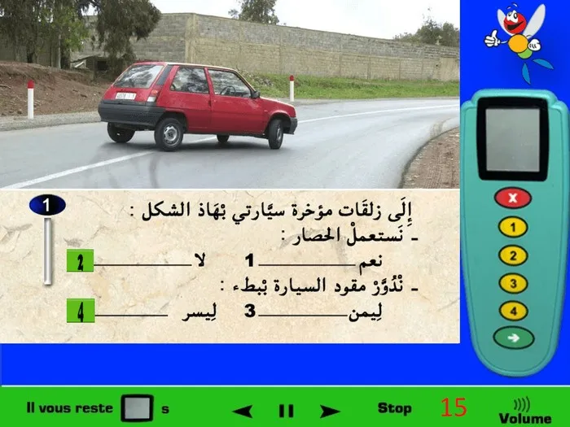
إذا انزلقت العربة لا نقوم بعمل أي شيئ، لا نقوم بإستعمال الفرامل ولا نقوم بزيادة السرعة وما إلى غير ذلك لأن السيارة منزلقة ولا نستطيع التحكّم بها بشكل كامل، لذلك إذا انزلقت السيّارة هنالك حركة نقوم بها للتحكم بالسيّارة قليلا وهي أن نلاحظ الاتجاه الذي انزلقت فيه مؤخرة السيّارة، في الصورة نلاحظ أن مؤخرة السيّارة انزلقت بإتّجاه الجهة اليسرى إذن نقوم بتحريك مقود السيارة إلى الجهة اليسرى. إذن لا نقوم بإستعمال الحصار ونقوم بتحريك مقود السيّارة إلى الجهة اليسرى.
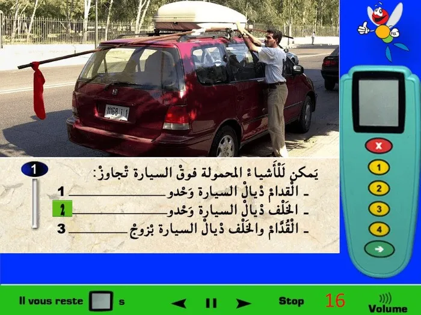
بالنسبة للأشياء المحمولة فوق السيّارة فيمكن أن تتجاوز خلف السيّارة وحدها (القانون يقول أنه لا يمكن أن تتجاوز الحمولة من خلف السّيارة 3 أمتار)، كما أنه ممنوع أن تتجاوز الأشياء المحمولة فوق السيارة مقدمة السيارة.
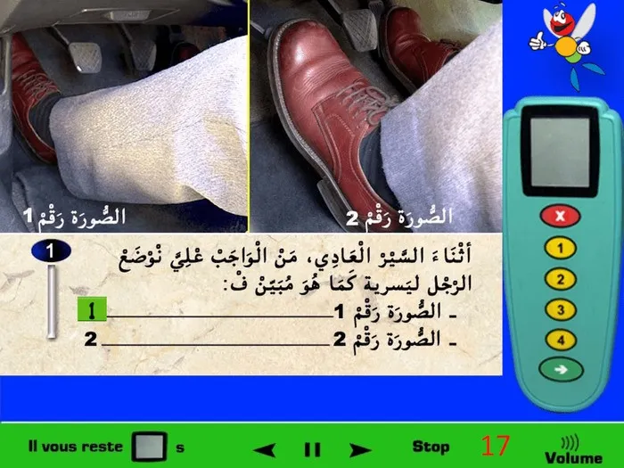
أثناء السّير العادي نقوم بوضع الرِجل اليسرى مثل الصورة 1، لا يجب وضعها على الواصل (L'embrayage) مثل الصورة 2، أولا لكي لا تتعب الرِجل من وضعها فوق الواصل وثانيا لكي لا يتلف disque الخاص بالسيّارة.
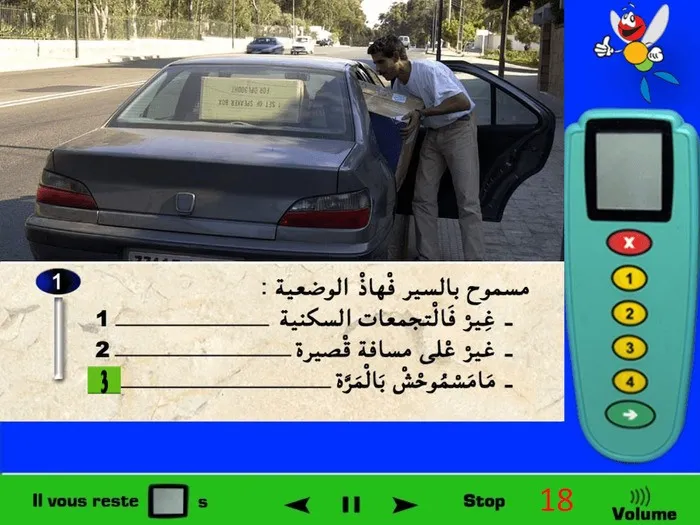
غير مسموح بالسير في هذه الوضعية، كما توضّح الصورة فيوجد بعض الأشياء خلف السيّارة وهي تمنع وتحجب الرؤية عن السائق من الخلف ولا يمكنه رؤية الطريق والسيارات عند السير. إذن هذه الوضعية غير مسموح بالسير بها مطلقا.
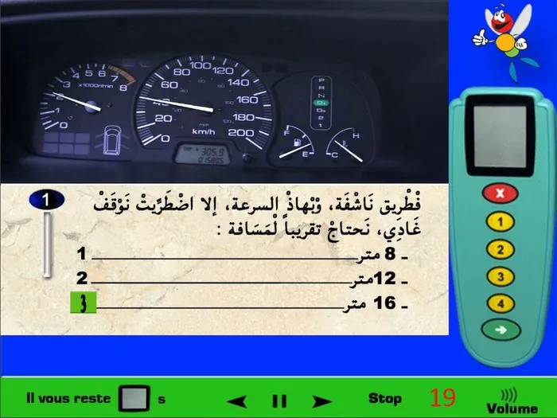
نسير في طريق ناشفة وبسرعة 40 كلم في الساعة، لحساب مسافة الوقوف في هذه الحالة فنقوم بحذف العدد الفردي وضرب ما تبقى من عدد في نفسه، في هذه الحالة سوف نقوم بحذف العدد الفردي والذي هو 0 ويتبقى لنا العدد 4. إذن نضرب العدد 4 في 4 والنتيجة هي 16. إذن إذا اضطررت للوقوف سوف أحتاج إلى مسافة 16 متر تقريبا للوقوف إذا كنت أسير بسرعة 40 كلم في الساعة.
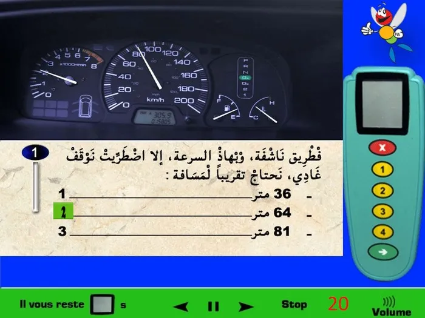
نسير في طريق ناشفة وبسرعة 80 كلم في الساعة، لحساب مسافة الوقوف في هذه الحالة فنقوم بحذف العدد الفردي وضرب ما تبقى من عدد في نفسه، في هذه الحالة سوف نقوم بحذف العدد الفردي والذي هو 0 ويتبقى لنا العدد 8. إذن نضرب العدد 8 في 8 والنتيجة هي 64. إذن إذا اضطررت للوقوف سوف أحتاج إلى مسافة 64 متر تقريبا للوقوف في طريق سيّار ناشفة إذا كنت أسير بسرعة 80 كلم في الساعة.
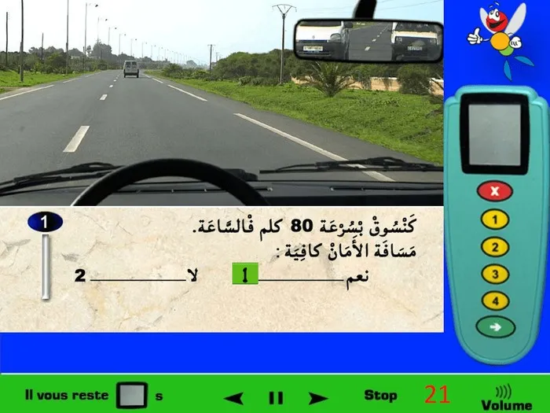
أسير بسرعة 80 كلم في الساعة، مسافة الأمان في هذه الحالة نقوم بحذف العدد الفردي والذي هو 0 ونقوم بضرب ما تبقى من عدد في 6، إذن 8 في 6 هي 48 متر. في الصورة بيني وبين السيّارة يوجد 3 خطوط وطول كل واحد فيهم 20 متر يعني المجموع 60 متر، بإلإضافة لوجود 2 فراغ وطول كل واحد فيهم 6 أمتار يعني 12 متر. إذن المسافة التي بيني وبين العربة التي أمامي تقريبا هي 72 متر. وأنا أحتاج إلى 48 متر في مسافة الامان. إذن مسافة الأمان كافية بيني وبين العربة التي أمامي.
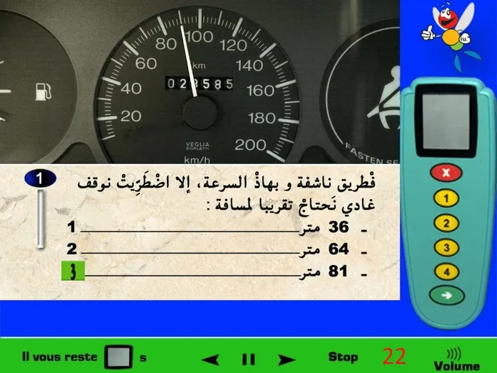
نسير في طريق ناشفة وبسرعة 90 كلم في الساعة، لحساب مسافة الوقوف في هذه الحالة فنقوم بحذف العدد الفردي وضرب ما تبقى من عدد في نفسه، في هذه الحالة سوف نقوم بحذف العدد الفردي والذي هو 0 ويتبقى لنا العدد 9. إذن نضرب العدد 9 في 9 والنتيجة هي 81. إذن إذا اضطررت للوقوف سوف أحتاج إلى مسافة 81 متر تقريبا للوقوف إذا كنت أسير بسرعة 90 كلم في الساعة.
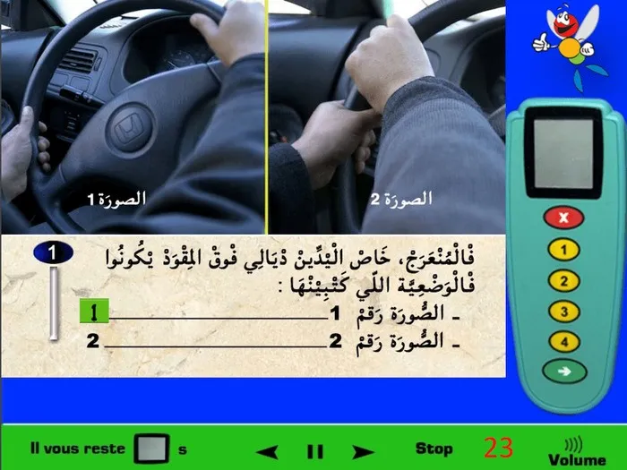
في المنعرج يجب على اليدين أن يكونا في وضعية مثل الصورة رقم 1، لأن هذه الوضعية هي التي نقوم باستعمالها في أثناء وجودنا في المنعرجات وذلك للتحكم بالمقود والعربة بشكل أفضل.
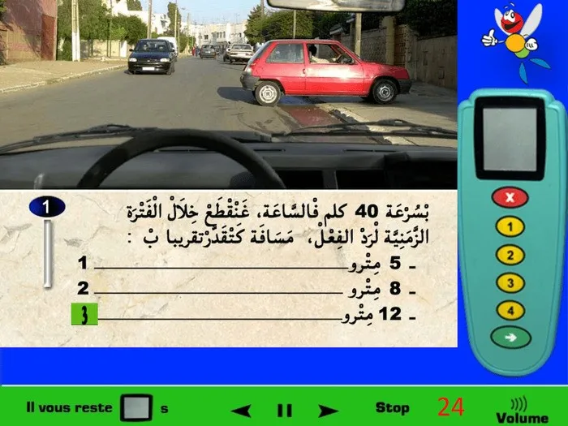
بالنسبة لحساب المسافة الخاصة بالفترة الزّمنية لرد الفعل (المقدرة بثانية) نقوم بحذف العدد الفردي من السرعة التي نسير بها ونضرب ما تبقى من عدد في العدد 3، إذن في هذه الحالة بما أننا نسير بسرعة 40 كلم في الساعة فسوف نقوم بضرب العدد 4 في 3 والنتيجة هي 12، إذن سوف تقطع السيّارة خلال الفترة الزّمني لرد الفعل مسافة تقدّر بحوالي 12 متر.
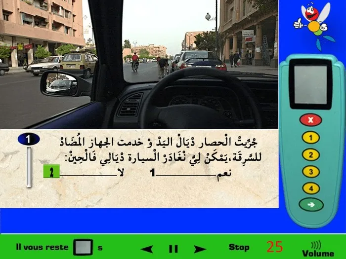
قبل مغادرة السيّارة قمنا برفع حصار اليد وتشغيل جهاز مضاد السّرقة وهذا شيئ جيّد، لكن الان لا يمكننا الخروج من السّيارة لأنه للخروج من السيّارة نحتاج إلى فتح باب السيّارة وإذا لاحظنا جيدا في المراَة الجانبية اليسرى فنرى أنه توجد سيّارة قادمة من الجانب وقريبة منّا، إذا قمنا بفتح الباب الان والخروج سوف تصطدم بنا السيّارة، لذلك لا يمكننا مغادرة السّيارة في الحين.
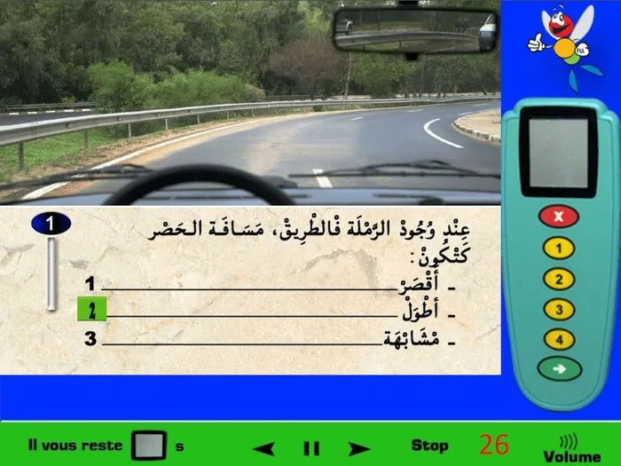
بطبيعة الحال وجود الرّمل أو الماء في الطّريق سوف تنزلق قليلا السيّارة عندما نقوم بالفرملة، إذن فإن مسافة الحصر تكون أطول عكس الحصر في طريق عادية.
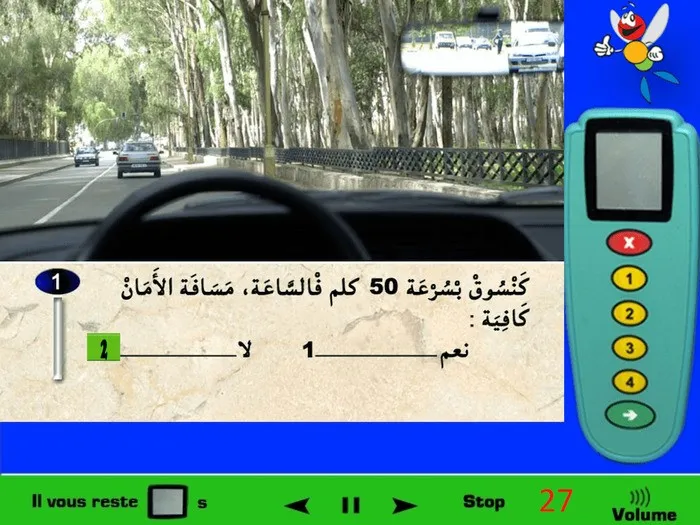
أسير بسرعة 50 كلم في الساعة، مسافة الأمان في هذه الحالة نقوم بحذف العدد الفردي والذي هو 0 ونقوم بضرب ما تبقى من عدد في 6، إذن 5 في 6 هي 30 متر. في الصورة واضح بشكل جيد أن المسافة التي بيني وبين السيارة التي أمامي قصيرة وأقل من مسافة الأمان 30 متر. لذلك مسافة الأمان غير كافية.
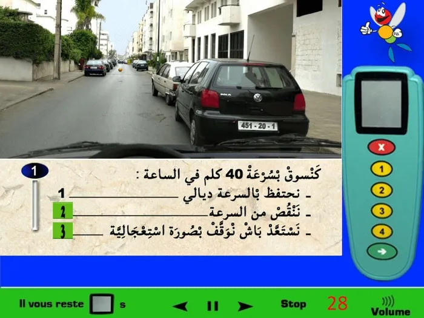
كما نلاحظ في الصورة توجد كرة في وسط الطّريق، وهذا يعني أنه يوجد طفل أو أطفال يلعبون في ذلك المكان وهذا يعني أنه يوجد خطر، وفي وجود خطر دائما ما نقوم بالإنقاص من السرعة، ويجب علينا الاستعداد للوقوف بصورة استعجالية لأنه يوجد إحتمال أن الطفل سوف يتبع الكرة وسط الطريق دون الانتباه. إذن أنقص من السرعة وأستعد للوقوف بصورة استعجالية.
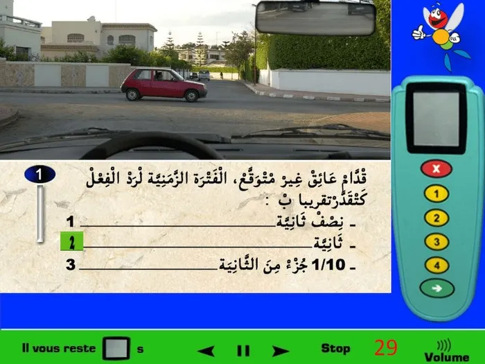
هذا السؤال هو قاعدة عامة، الفترة الزّمينة لرد الفعل تقدّر تقريبا بثانية واحدة في الظروف العادية. (تكون أكثر إذا كان السائق في حالة سكر أو لديه مشاكل وغيرها من الأسباب التي تجعل من وقت رد الفعل أطول).
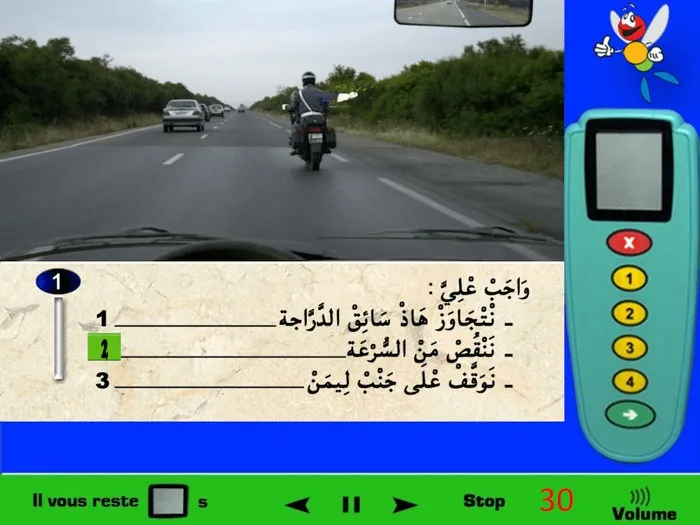
عندما يشير إلينا دركي المرور بيده مثل الصورة فإنه يعني أنّ علينا الإنقاص من السرعة. (عندما يشير بإصبعه فقط فهنا يشير إلى الوقوف على جنب الطريق على اليمين).
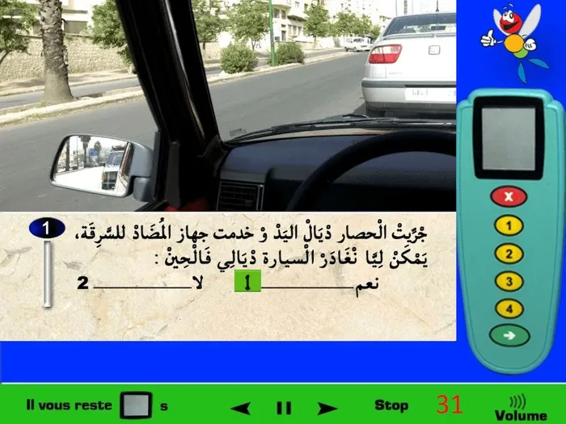
بما أنني قمت بجر حصّار اليد وقمت بتشغيل جهاز مضاد السّرقة ولا توجد عربة قامة من الخلف إذن يمكنني مغادرة السّيارة الان.
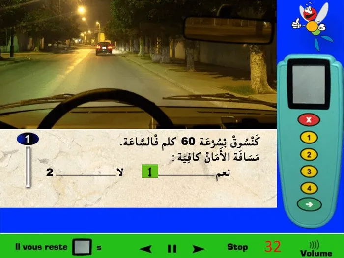
أسير بسرعة 60 كلم في الساعة، مسافة الأمان في هذه الحالة نقوم بحذف العدد الفردي والذي هو 0 ونقوم بضرب ما تبقى من عدد في 6، إذن 6 في 6 هي 36 متر. داخل المدينة نستعمل الأشجار أو أعمدة الإنارة العمومية لحساب مسافة الأمان، في الصور يوجد أشجار والمسافة بين كل شجرة وشجرة هي 10 أمتار. في الصورة يتّضح أن هنالك 4 فراغات بين كل شجرة، إذن تقريبا بيني وبين العربة التي أمامي يعني تقريبا 40 متر. إذن مسافة الأمان كافية (مسافة الأمان هي 36 متر كما قمنا بحسابها مسبقا).
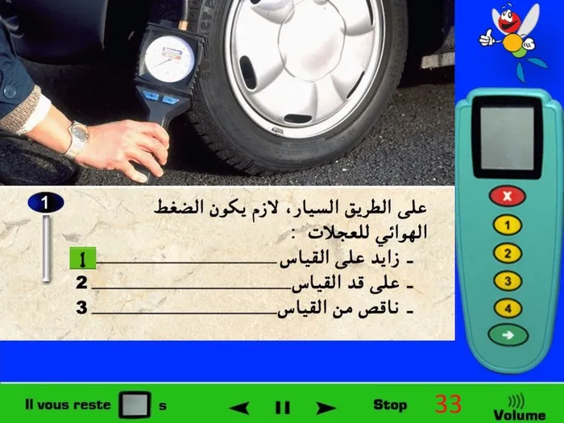
بالنسبة لتعليمات ضغط الهواء للعجلات فيكون مكتوب على ملصق على باب السيّارة أو في كتاب التعليمات للسائق، حيت تحتوي هذه المعلومات على نسبة الضغط الهوائي المناسب بالنسبة للعجلات الأمامية ونسبة الضغط الهوائي المناسب للعجلات الخلفية. لكن يمكننا زيادة الضغط الهوائي للعجلات قليلا إذا قمنا بإضافة حمولة للسّيارة أو إذا كنا سوف نستعمل الطّريق السّيار.